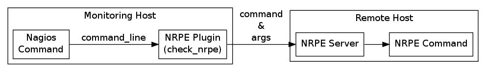

NRPE plugin 會在 /ect/nagios-plugins/config/ 底下安裝 check_nrpe.cfg，裡面定義了兩個 (Nagios) commands - check_nrpe 跟 check_nrpe_1arg：
/etc/nagios-plugins/config/check_nrpe.cfg# this command runs a program $ARG1$ with arguments $ARG2$
define command {
command_name check_nrpe
command_line /usr/lib/nagios/plugins/check_nrpe -H $HOSTADDRESS$ -c $ARG1$ -a $ARG2$
}
# this command runs a program $ARG1$ with no arguments
define command {
command_name check_nrpe_1arg
command_line /usr/lib/nagios/plugins/check_nrpe -H $HOSTADDRESS$ -c $ARG1$
}通常 Nagios（或 Icinga）預設會將 /etc/nagios-plugins/config/ 底下的組態檔也一併引入，因此可以在 host/service check 的 check command 裡直接調用 check_nrpe 或 check_nrpe_1arg。
例如 check_nrpe_1arg!check_load 可以透過 Nagios plugin (check_nrpe) 呼叫另一台機器上 check_load 這個 NRPE command。
|
|
注意這裡 "Nagios command" 跟 "NRPE command" 的不同，兩者的關係大概是這樣：

|
安裝
分兩部份來看，Monitoring Host 上要裝 NRPE plugin。
apt-get --no-install-recommends install nagios-nrpe-plugin由於 NRPE plugin 不一定得搭配 Nagios 使用，但 nagios-nrpe-plugin 預設會將 Nagios 一併安裝，可以用 --no-install-recommends 來避開這個問題。
NRPE plugin 會被安裝在 /usr/lib/nagios/plugins/check_nrpe：
$ dpkg -L nagios-nrpe-plugin
/.
/usr
/usr/share
/usr/share/doc
/usr/share/doc/nagios-nrpe-plugin
/usr/share/doc/nagios-nrpe-plugin/NEWS.Debian.gz
/usr/share/doc/nagios-nrpe-plugin/changelog.Debian.gz
/usr/share/doc/nagios-nrpe-plugin/copyright
/usr/lib
/usr/lib/nagios
/usr/lib/nagios/plugins
/usr/lib/nagios/plugins/check_nrpe
/etc
/etc/nagios-plugins
/etc/nagios-plugins/config
/etc/nagios-plugins/config/check_nrpe.cfg